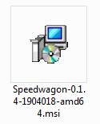

Getting Started¶
Installation¶
There are a number of ways to install Speedwagon, depending on your needs.
Installation on Windows¶
Since the majority of computer workstations used by the staff of The University of Illinois at Urbana Champaign libraries run the Windows operating system, the development of Speedwagon focused on making the application easily accessible on the Windows platform. A great deal work has gone into making Speedwagon not only easy to use but also easy to install on Windows for an average user.
Installation on Windows from MSI installer¶
Normal Windows users can download and install a prebuilt Windows Installer .msi file. Unless you have experience with installing Python packages, you should use this method because it is the easiest. This installer uses the standard Windows install wizard to help you install everything needed to run Speedwagon. In addition, the install wizard creates a start menu icon and adds an easy way to uninstall it later if you choose.
Double click on the Speedwagon-version.number.msi file to start the installation wizard.
Installation on Windows from whl File¶
If you do not want to install the msi but you still want to install a prebuilt package, you can install the Python wheel.
Install Speedwagon whl file from the command line:
python -m pip install D:\hborcher\Downloads\speedwagon-0.1.4b5-py3-none-any.whl
Installation on Windows from Source¶
If you do not want to install the msi or the whl file.
Download the latest source release from github.
Install Speedwagon as a Python package from the command line:
python setup.py install
Installation on Other Operating Systems¶
The majority of the code in Speedwagon is operating system agnostic. However, because of the resources available and the internal demand for Windows installers, Speedwagon has been mainly developed and tested to work on Windows. With this said, Speedwagon can run on a Mac computer. However, it requires more work from the user and running it on a Mac has caveats. Not every feature is available and there are currently no plans to support prebuilt standalone distributions.